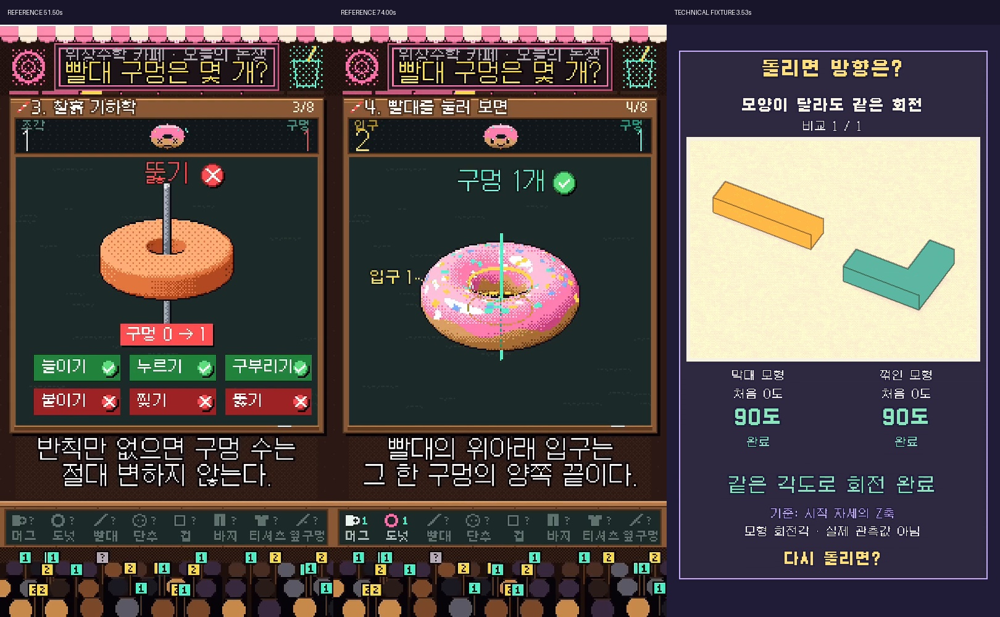
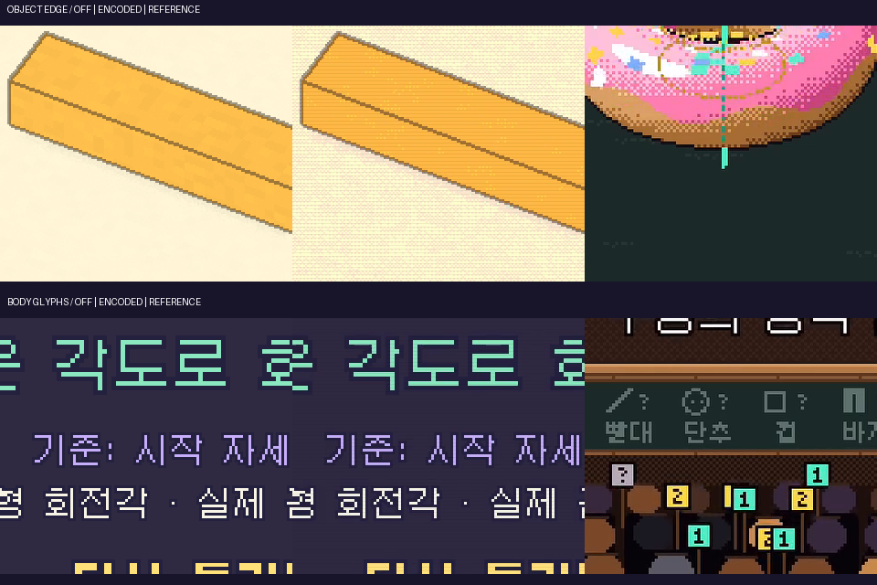

사용자 제공 176.21초 빨대 MP4의 표본 프레임을 관찰했다. 실제 원본 셰이더 코드나 효과음 타이밍을 알아낸 것으로 표현하지 않는다. 기존 소재 공급·EP08 결과는 보존했다.
수치 갱신: 막대 75프레임 동작 완료 → 76프레임 90도, 꺾인 모형 105 → 106프레임. 실제 관측 데이터가 아닌 렌더 장면의 회전각임을 화면에 명시했다.
| 시간 | 화면 근거 | 타이밍의 역할 |
|---|---|---|
| 00:00–00:17 | 실물 컵/빨대로 시작해 2개·1개 예상과 설문 수치를 제시한다. 제목, 챕터 1/8, 숫자 HUD, 아래 관객 영역을 유지한다. | 일상 물체를 본 뒤 의견 차이가 생기도록 한다. |
| 00:19–00:39 | 입구 2, 이어진 길 1, 뚫은 자국 0을 노랑·민트·보라로 구분한다. 사전 정의 패널이 숫자 차이를 설명한다. | 숫자보다 먼저 무엇을 세는지 분리한다. |
| 00:40–00:53.5 | 늘이기·누르기·구부리기에 초록 체크, 붙이기·찢기·뚫기에 빨간 실패 표시가 붙는다. 정확 추출 50.50초에는 뚫기 전 구멍 0, 51.00초에는 관통 모습과 HUD 1, 51.50초에는 구멍 0→1 패널과 실패 표시가 함께 보인다. | 동작→관찰값 변화→규칙 위반 피드백 순서로 이해를 연결한다. |
| 00:53.5–00:83 | 머그컵을 도넛으로, 빨대를 짧게 눌러 고리/도넛으로 바꾼다. 변형 뒤 구멍 1개 결과와 위아래 입구 라벨을 붙인다. | 새 무대 대신 같은 대상의 연속 변형으로 앞 규칙을 적용한다. |
| 00:85–00:107 | 단추, 한쪽 끝을 막은 빨대, 발가락 쪽이 열린 양말로 사례를 바꾼다. 입구와 뚫린 길을 계속 대조한다. | 사례를 바꿔 이전 결론이 우연이 아님을 보여준다. |
| 00:109–00:129 | 종이 말아 붙이기와 컵/빨대의 내부 고리 비교를 제시한다. 122초에는 같은 위치의 두 대상, 126초에는 한쪽 고리는 작아지고 다른 쪽은 걸리는 결과가 보인다. | 대안 정의의 한계를 실제 구조 변화와 비교로 설명한다. |
| 00:131–00:153 | 영상은 조건을 붙인 구멍=입구−1 표현을 컵·빨대·바지·티셔츠에 적용한다. | 같은 원리를 다른 물체에 적용하는 보상을 만든다. |
| 00:155–00:176.21 | 빨대 옆을 찌르는 새 실험 후 163초에는 전1/후2 결과가 보인다. 마지막에는 원래의 2·0·1 정의를 정리하고 선택을 묻는다. | 처음 질문을 이해한 상태에서 참여하게 한다. |
왼쪽 두 장은 원본, 오른쪽은 자체 기술 시안. 개별 에셋·관객 스프라이트·대본은 복제하지 않았다.

필터 미적용 / 인코딩된 적용 결과 / 원본의 부분 확대. 원본과 자체 시안의 출력 해상도는 서로 다르다. 원본 720×1280·30fps, 시안 540×960 3D → Nearest 2배 → 1080×1920·30fps UI.

수정 후 3D 85.15초 / 합성 12.79초. 재실행 1.02초, 150프레임 모두 캐시 재사용, 3D 재렌더 0. 별도 UI 변경은 합성만 실행했다. 외부 LLM API 추가 호출 0; 대화 토큰 절감률은 측정하지 않았다.
상태 14 + 메시 연산 13 + 캐시 2 + 기존 V5 10 검증 통과. 150프레임 창 밖 오브젝트·자막 충돌·글리프 폴백 없음. MP4 전체 디코드 통과. 미술·과학·시청 재미를 자동 승인하지 않는다.